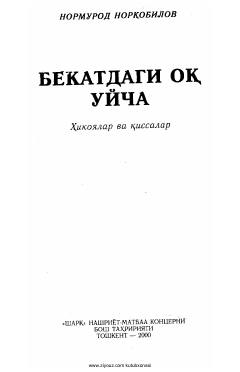

BONormurod Norqobilovning hikoya va qissalardan iborat sara asarlar to'plami.
Ushbu kitob Normurod Norqobilovning turli hikoya va qissalarini o'z ichiga olgan to'plamdir. Asarlarda insoniy kechinmalar, tabiat tasvirlari va hayotiy voqealar badiiy tilda yoritilgan.